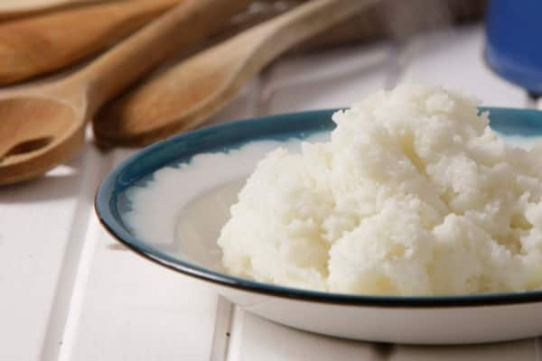

Stiff pap

Description
This stiff pap is a great accompaniment to stews and braai meat
Ingredients
- 1 tsp. salt
- 2 cups maize meal
- 2 tsp. butter
Steps
- In a large saucepan, bring 3 cups water to a rapid boil and the salt. Add half the maize meal and cover. Reduce the heat to medium-low and leave the pap for 8 to 10 minutes. Resist the urge to stir.
- Remove the lid, then stir vigorously for 1 minute to incorporate any remaining maize meal into the water.
- Repeatedly mash the pap against the side of the saucepan for approximately 2 minutes to get rid of any lumps.
- Gradually add the remaining maize meal, stir vigorously and mash again. Reduce the heat to the lowest setting, replace the lid and let the pap steam for 10 to 15 minutes.
- Remove the lid and stir. If the pap is a bit too dry, add a little more water and stir again. Add 1 to 2 T butter and stir.
- Serve warm with the lamb stew.